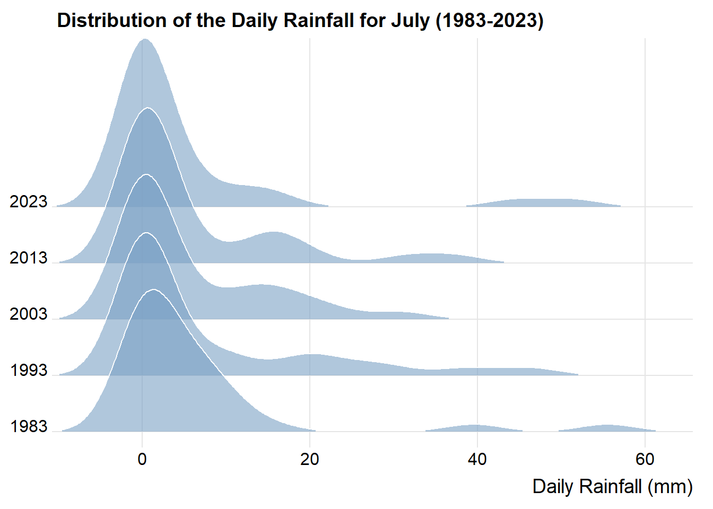
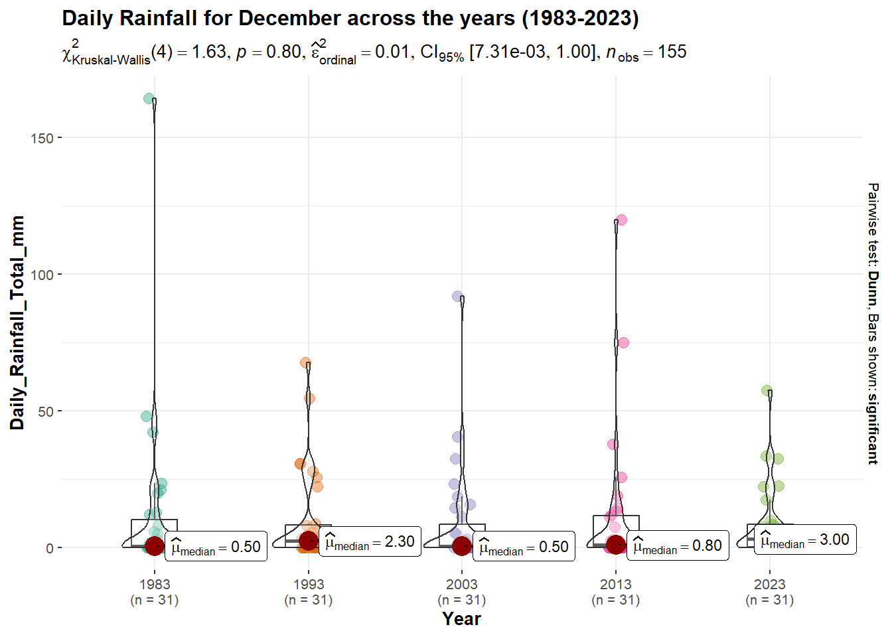
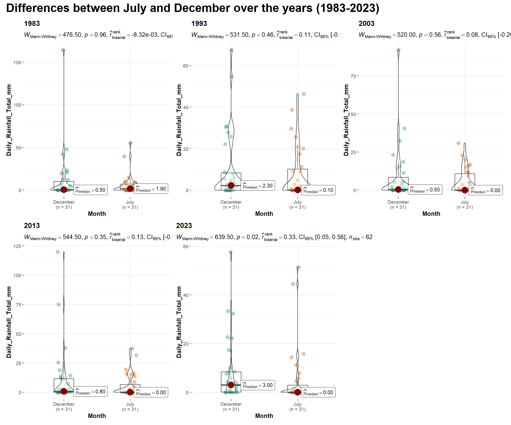

pacman::p_load(ungeviz, plotly, crosstalk, patchwork,
DT, ggdist, ggridges, ggstatsplot,ggthemes,
colorspace, gganimate, tidyverse, dplyr,
readr)Take-Home Exercise 3 - Be Weatherwise or Otherwise
1. Overview
According to an official report as shown in the infographic below,
The intensity and frequency of heavy rainfall events is expected to increase as the world gets warmer, and
The contrast between the wet months (November to January) and dry months (February and June to September) is likely to be more pronounced.

2. The Task
As a visual analytics greenhorn, we are keen to apply newly acquired visual interactivity and visualising uncertainty methods to validate the claims presented above.
In this take-home exercise, I will:
Select a weather station and download historical daily rainfall data from the Meteorological Service Singapore website,
Select rainfall records of a Dry month and a Wet month for the years 1983, 1993, 2003, 2013 and 2023, and
Create an analytics-driven data visualisation and apply appropriate interactive techniques to enhance the user experience in data discovery and visual story-telling.
2.1 Installing and Loading R packages
2.2 Importing Data and Data Preparation
I will download and import data for July (Dry) and December (Wet) for 1983, 1993, 2003, 2013, 2023.
I have chosen Changi weather station, as it is one of the older weather stations with daily rainfall data recorded since 1981. For more information on the weather stations and the historical data available, please refer to this link.
Show the code
# List of file names
December_files <- c("data/DAILYDATA_S24_198312.csv", "data/DAILYDATA_S24_199312.csv",
"data/DAILYDATA_S24_200312.csv", "data/DAILYDATA_S24_201312.csv",
"data/DAILYDATA_S24_202312.csv")
July_files <- c("data/DAILYDATA_S24_198307.csv", "data/DAILYDATA_S24_199307.csv",
"data/DAILYDATA_S24_200307.csv", "data/DAILYDATA_S24_201307.csv",
"data/DAILYDATA_S24_202307.csv")Upon inspecting the csv files for the 5 years, the below columns were removed as they were only recorded since 2014:
Highest 30-min Rainfall (mm)
Highest 60-min Rainfall (mm)
Highest 120-min Rainfall (mm)
I will use the code below to import the csv files into our R environment
# Reading and combining the CSV files for December
December_data <- lapply(December_files, read_csv, col_names = FALSE,
col_select = c(1, 2, 3, 4, 5, 9, 10, 11, 12, 13),
skip = 1) %>%
bind_rows(.id = "file")# Reading and combining the CSV files for July
July_data <- lapply(July_files, read_csv, col_names = FALSE,
col_select = c(1, 2, 3, 4, 5, 9, 10, 11, 12, 13),
skip = 1) %>%
bind_rows(.id = "file")I will use the code below to rename the column names for the data sets.
Show the code
# Renaming the columns
colnames(December_data) <- c("ID", "Station", "Year", "Month", "Day",
"Daily_Rainfall_Total_mm", "Mean_Temperature_C",
"Maximum_Temperature_C", "Minimum_Temperature_C",
"Mean_Wind_Speed_km_h", "Max_Wind_Speed_km_h")
December_data$Year <- as.factor(December_data$Year)
colnames(July_data) <- c("ID", "Station", "Year", "Month", "Day",
"Daily_Rainfall_Total_mm", "Mean_Temperature_C",
"Maximum_Temperature_C", "Minimum_Temperature_C",
"Mean_Wind_Speed_km_h", "Max_Wind_Speed_km_h")
July_data$Year <- as.factor(July_data$Year)I will use the code below to combine the July and December data sets.
July_data$Month <- 'July'
December_data$Month <- 'December'
combined_data <- rbind(July_data, December_data)I will use the datatable() function to inspect the combined data set.
DT::datatable(combined_data, class= "compact")str(combined_data)tibble [310 × 11] (S3: tbl_df/tbl/data.frame)
$ ID : chr [1:310] "1" "1" "1" "1" ...
$ Station : chr [1:310] "Changi" "Changi" "Changi" "Changi" ...
$ Year : Factor w/ 5 levels "1983","1993",..: 1 1 1 1 1 1 1 1 1 1 ...
$ Month : chr [1:310] "July" "July" "July" "July" ...
$ Day : num [1:310] 1 2 3 4 5 6 7 8 9 10 ...
$ Daily_Rainfall_Total_mm: num [1:310] 8.7 0 5.3 6.2 39.5 14.9 0 0 10.5 55.5 ...
$ Mean_Temperature_C : num [1:310] 27.5 28.7 27.9 28 25.4 27.1 26.2 28.2 27.8 25.4 ...
$ Maximum_Temperature_C : num [1:310] 33 32.6 32 31.9 27.4 31.1 28.1 31.9 31.1 27.2 ...
$ Minimum_Temperature_C : num [1:310] 24.4 25.5 24.4 25.7 21.4 24.1 22.6 25.6 26 23 ...
$ Mean_Wind_Speed_km_h : num [1:310] 3.7 10.5 5.8 7.6 3.6 8.4 5 11.8 9 5.3 ...
$ Max_Wind_Speed_km_h : num [1:310] 28.8 38.2 44.6 51.8 36 31.3 42.5 39.6 43.9 46.8 ...
- attr(*, "spec")=
.. cols(
.. X1 = col_character(),
.. X2 = col_double(),
.. X3 = col_double(),
.. X4 = col_double(),
.. X5 = col_double(),
.. X6 = col_skip(),
.. X7 = col_skip(),
.. X8 = col_skip(),
.. X9 = col_double(),
.. X10 = col_double(),
.. X11 = col_double(),
.. X12 = col_double(),
.. X13 = col_double()
.. )sum(is.na(combined_data))[1] 0There are no missing values in our data set.
3. Visualising the Differences in Daily Rainfall
The objective of these visualisations is to help us to:-
Identify the trends and differences in Daily rainfall between the same months across the 5 years, and
Identify the trends and differences between the “July to December” periods across the 5 years.
This will assist us in validating the below claims that:
The intensity and frequency of heavy rainfall events is expected to increase as the world gets warmer, and
The contrast between the wet months (November to January) and dry months (February and June to September) is likely to be more pronounced.
3.1 Frequency and Intensity of Rainfall events
First, I will use the code below to create a static line plot to visualize July’s and December’s rainfall over the 5 years.
Show the code
ggplot(combined_data, aes(x = Day,
y = Daily_Rainfall_Total_mm, group = Month)) +
# Use geom_area for one of the months, July in this case
geom_area(data = subset(combined_data, Month == "July"),
aes(fill = Year), alpha = 0.3) +
# Use geom_line for both months to ensure the line is on top of the fill
geom_line(aes(color = Year,
linetype = Month)) +
facet_wrap(~Year, ncol = 1) +
labs(title = "Daily Rainfall in July and December by Year (1983 - 2023)",
x = "Day of the Month",
y = "Rainfall (mm)",
color = "Year",
fill = "Year",
linetype = "Month") +
theme_minimal() +
guides(fill = guide_legend("Year"), color = guide_legend("Year"),
linetype = guide_legend("Month"))Next, to enable readers to specifically examine the rainfall measures in more detail, I will use the code below to add interactivity.
Show the code
p3 <- ggplot(combined_data, aes(x = Day, y = Daily_Rainfall_Total_mm)) +
# Use geom_line for both months, specifying linetype based on Month
geom_line(aes(color = Year, linetype = Month)) +
facet_wrap(~Year, ncol = 1) +
labs(title = "Daily Rainfall in July and December by Year (1983-2023)",
x = "Day of the Month",
y = "Rainfall (mm)",
color = "Year",
linetype = "Month") +
theme_minimal() +
guides(fill = guide_legend("Year"), color = guide_legend("Year"),
linetype = guide_legend("Month")) + scale_linetype_manual(values = c("July" = "dotted", "December" = "solid"))ggplotly(p3)I will also animate the combined plot of July and December’s Daily rainfall, using gganimate.
This animation will provide a visual comparison on how daily rainfall changes for each month, across the years.
Show the code
# Adjusted plot code without geom_area
p_combined_simple <- ggplot(combined_data,
aes(x = Day,
y = Daily_Rainfall_Total_mm,
group = interaction(Month, Year),
color = Year)) +
geom_line(aes(linetype = Month)) +
facet_wrap(~Year, ncol = 1) +
labs(title = "Daily Rainfall in July and December by Year: Day {frame_along}",
x = "Day of the Month",
y = "Rainfall (mm)",
color = "Year",
linetype = "Month") +
theme_minimal() +
guides(color = guide_legend("Year"), linetype = guide_legend("Month"))
# Simplify the animation using transition_reveal for Day
animated_plot_simple <- p_combined_simple +
transition_reveal(Day) +
ease_aes('linear')
# Render the animation
animate(animated_plot_simple, nframes = 31, fps = 5, width = 800, height = 600)
Observation 1 - Frequency and Intensity of Rainfall events show no substantial increase
The infographics had reported that the Intensity and frequency of heavy rain fall events is expected to increase as the world gets warmer.
From the visualisations above, in general, there are visibly more rain days in December relative to July over the years.
However, there seems to be no substantial increase in the intensity of heavy rain events. For example, we can see that the highest recorded daily rainfall event occured in December 1983 at 164.4 mm. However, this level of intensity has not been surpassed in subsequent years.
Additionally, the volume of rainfall for both July and December 2023 is the least within the 5 years.
This further challenges the claim that the intensity and frequency of heavy rainfall events is expected to increase as the world gets warmer.
3.2 One-way Anova test on Daily Rainfall for the same month, by year
The infographics had reported that the Intensity and frequency of heavy rain fall events is expected to increase as the world gets warmer.
Our visualisations in the previous section have showed otherwise.
We can validate this statistically and examine if there are any significant statistical differences between the daily rainfall for each July, and each December, across the five years.
First, we will need to ascertain the nature of the distribution, and see if it is normal or non-normal distributed.
We can first visualise the distribution of daily rainfall using ridgeline plots, using the code below.
Show the code
ggplot(July_data,
aes(x = Daily_Rainfall_Total_mm,
y = Year)) +
geom_density_ridges(
scale = 3,
rel_min_height = 0.01,
bandwidth = 3.4,
fill = lighten("#7097BB"),
alpha = 0.6,
color = "white"
) +
scale_x_continuous(
name = "Daily Rainfall (mm)",
expand = c(0, 0)
) +
scale_y_discrete(name = NULL, expand = expansion(add = c(0.2, 2.6))) +
theme_ridges() +
labs(title = "Distribution of the Daily Rainfall for July (1983-2023)")
Show the code
ggplot(December_data,
aes(x = Daily_Rainfall_Total_mm,
y = Year)) +
geom_density_ridges(
scale = 3,
rel_min_height = 0.01,
bandwidth = 3.4,
fill = lighten("#7097BB"),
alpha = 0.6,
color = "white"
) +
scale_x_continuous(
name = "Daily Rainfall (mm)",
expand = c(0, 0)
) +
scale_y_discrete(name = NULL, expand = expansion(add = c(0.2, 2.6))) +
theme_ridges() +
labs(title = "Distribution of the Daily Rainfall for December (1983-2023)")
Note
From the ridgeline plots above, we can see that the distribution for both July and December rainfall do not resemble a normal distribution, and that there is a right skewness.
Since the distribution of rainfall is non-normal, I will conduct non-parametric tests.
The Hypothesis will be as such:
H0: There is no difference between the median daily rainfall for the same month across the 5 years.
H1: There is a difference between the median daily rainfall for the same month across the 5 years.
I will use ggstatsbetween() from the ggstatplot package.
Show the code
ggbetweenstats(
data = July_data,
x = Year,
y = Daily_Rainfall_Total_mm,
type = "np",
mean.ci = TRUE,
pairwise.comparisons = TRUE,
pairwise.display = "s",
p.adjust.method = "fdr",
messages = FALSE
) +
ggtitle("Daily Rainfall for July across the years (1983-2023)")
Show the code
ggbetweenstats(
data = December_data,
x = Year,
y = Daily_Rainfall_Total_mm,
type = "np",
mean.ci = TRUE,
pairwise.comparisons = TRUE,
pairwise.display = "s",
p.adjust.method = "fdr",
messages = FALSE
) +
ggtitle("Daily Rainfall for December across the years (1983-2023)")
Validation results
In both the tests above, the p-value is > 0.05.
Hence, we have insufficient evidence to reject the Null Hypothesis and can conclude that there is no strong evidence to indicate that there is a difference in the Daily rainfall for the same month across the years.
This supports Observation 1, where we concluded that there seems to be no substantial increase in the frequency and intensity of heavy rain fall events.
3.3 Differences between July and December across the years (Dry Vs Wet Months)
To visualise the differences for the June-December periods, I will use the codes below to examine:
The differences in the number of Rain days, and
The differences in the Daily Rainfall, between the two months, across the years
Show the code
rain_fall_summary <- combined_data %>%
group_by(Year, Month) %>%
summarize(
MeanRainfall = mean(Daily_Rainfall_Total_mm, na.rm = TRUE),
RainyDays = sum(Daily_Rainfall_Total_mm > 0, na.rm = TRUE), # Count days with rain
.groups = 'drop'
)Show the code
p_1 <- ggplot(rain_fall_summary, aes(x = Year, y = RainyDays, group = Month, color = Month)) +
geom_line() +
geom_point() +
labs(title = "The largest difference in the number of Rain Days between\nJuly and December was in 2023",
x = "Year",
y = "Number of Rainy Days",
color = "Month") +
theme_minimal() +
theme(legend.position = "none")
p_2 <- ggplot(rain_fall_summary, aes(x = Year, y = MeanRainfall, group = Month, color = Month)) +
geom_line() +
geom_point() +
labs(title = "Both July's and December's mean Daily Rainfall have\ntrended lower over the Years",
x = "Year",
y = "Mean Daily Rainfall (mm)",
color = "Month") +
theme_minimal() +
theme(legend.position = "right")
p_3 <- ggplot(combined_data, aes(x = Year, y = Daily_Rainfall_Total_mm, fill = Month)) +
geom_boxplot() +
labs(title = "The gap between July and December has reduced in 2023 ",
subtitle = "The intensity of December's heavy rainfall events seem to be diminishing",
x = "Year",
y = "Daily Rainfall (mm)",
fill = "Month") +
theme_minimal() +
theme(legend.position = "right")Using Patchwork to combine the plots.
Show the code
combined_plot <- (p_1 + p_2) / p_3 +
plot_annotation(
title = "The contrast between July and December has become more pronounced over the years",
theme = theme(
plot.title = element_text(size = 20, face = "bold")
)
) +
theme(plot.title.position = "plot")
combined_plot
Next, to enable readers to specifically examine the differences in the rainfall between the two months in more detail, I will use the code below to add interactivity.
Show the code
combined_mean <- combined_data %>%
group_by(Year, Month) %>%
summarise(MeanRainfall = round(mean(Daily_Rainfall_Total_mm, na.rm = TRUE), 2)) %>%
ungroup()
# Create the ggplot object
p_combined <- ggplot(combined_data, aes(x = Year, y = Daily_Rainfall_Total_mm, color = Month)) +
geom_jitter(aes(text = paste('Day:', Day, 'Month:', Month)), width = 0.2, alpha = 0.5) +
geom_line(data = combined_mean, aes(x = Year, y = MeanRainfall, group = Month),
size = 0.5, linetype = "dotted") +
geom_point(data = combined_mean, aes(x = Year, y = MeanRainfall),
size = 3, show.legend = FALSE) +
scale_color_manual(values = c("July" = "blue", "December" = "red")) +
labs(title = "Daily Rainfall in July and December (1983-2023)",
x = "Year",
y = "Daily Rainfall Total (mm)") +
theme_minimal() +
theme(legend.position = "bottom") +
guides(color = guide_legend(title = "Month"))Show the code
p_plotly <- ggplotly(p_combined) %>%
layout(hovermode = 'closest')
p_plotly
Observation 2 - Contrast between Dry and Wet Months are likely to be more pronounced
The infographics had reported that the contrast between Dry and Wet months is likely to be more pronounced.
Our plots above show that:-
The difference in the number of rain days between July and December, in 2023, was at its highest, relative to previous years. The number of rain days in July has decreased, and the number of rain days in December has increased, over the years.
The mean daily rain fall for both July and December 2023 was at its lowest relative to other years.
In 2023, the gap of heavy rain fall events have been reduced. In previous years, there were more days with heavy rain fall in December relative to July.
Hence, this lends credence to the claim that the contrast between Dry and Wet months is likely to be more pronounced.
3.4 Two-sample mean test: July Vs December, by Year
The infographics had reported that the contrast between wet months and dry months is likely to be more pronounced.
Our visualisations in the previous section have corroborated this claim.
We can validate this statistically and examine if there is any evidence to suggest that there is indeed a difference in the daily rainfall between the two months (July and December).
The Hypothesis will be as such:
H0: There is no difference in the median daily rainfall between July and December across the 5 years
H1: There is a difference in the median daily rainfall between July and December across the 5 years
Since we have rain fall data for 5 different years, I will use grouped_ggbetweenstats() from the ggstatplot package.
Show the code
group_plot <- grouped_ggbetweenstats(
data = combined_data,
x = Month,
y = Daily_Rainfall_Total_mm,
grouping.var = Year,
type = "np", # for non-parametric
pairwise.comparisons = TRUE,
pairwise.display = "s",
p.adjust.method = "fdr",
output = "plot"
)
group_plot + plot_annotation(
title = "Differences between July and December over the years (1983-2023)",
theme = theme(
plot.title = element_text(size = 20, face = "bold")
)
) +
theme(plot.title.position = "plot")
Validation Results
In the tests above, the p-value is > 0.05 for the years 1983,1993,2003 and 2013.
However the p-value is < 0.05 for year 2023.
Hence we can reject the Null Hypothesis and can conclude that there is some evidence to suggest that there is some difference in the daily rainfall between July to December, across the 5 years.
This supports Observation 2, where we concluded that the contrast between Dry and Wet months is likely to be more pronounced.
4. Visualising Uncertainty of Point Estimates in Rainfall data
The code below will be used to derive the necessary summary statistics ie mean, standard deviation and standard error.
Show the code
July_rain <- July_data %>%
group_by(Year) %>%
summarise(
n=n(),
mean=mean(Daily_Rainfall_Total_mm),
sd=sd(`Daily_Rainfall_Total_mm`)
) %>%
mutate(se=sd/sqrt(n-1))
Dec_rain <- December_data %>%
group_by(Year) %>%
summarise(
n=n(),
mean=mean(Daily_Rainfall_Total_mm),
sd=sd(`Daily_Rainfall_Total_mm`)
) %>%
mutate(se=sd/sqrt(n-1))4.1 Interactive Error Bars
We can also visualise the uncertainty of point estimates by plotting interactive error bars for the 99% confidence interval of mean Daily Rainfall in July and December by year as shown in the figures below.
Show the code
shared_df = SharedData$new(July_rain)
bscols(widths = c(6,6),
ggplotly((ggplot(shared_df) +
geom_errorbar(aes(
x=reorder(Year, -mean),
ymin=mean-2.58*se,
ymax=mean+2.58*se),
width=0.2,
colour="black",
alpha=0.9,
size=0.5) +
geom_point(aes(
x=Year,
y=mean,
text = paste("Year:", `Year`,
"<br>N:", `n`,
"<br>Avg. Rainfall:", round(mean, digits = 2),
"<br>95% CI:[",
round((mean-2.58*se), digits = 2), ",",
round((mean+2.58*se), digits = 2),"]")),
stat="identity",
color="red",
size = 1.5,
alpha=1) +
xlab("Year") +
ylab("Average Daily Rainfall (mm)") +
theme_minimal() +
theme(axis.text.x = element_text(
angle = 45, vjust = 0.5, hjust=1)) +
ggtitle("99% Confidence Interval of<br>Avg Rainfall in July by Year")),
tooltip = "text"),
DT::datatable(shared_df,
rownames = FALSE,
class="compact",
width="100%",
options = list(pageLength = 14,
scrollX=T),
colnames = c("No. of observations",
"Avg Daily Rainfall",
"Std Dev",
"Std Error")) %>%
formatRound(columns=c('mean', 'sd', 'se'),
digits=2))Show the code
shared_df2 = SharedData$new(Dec_rain)
bscols(widths = c(6,6),
ggplotly((ggplot(shared_df2) +
geom_errorbar(aes(
x=reorder(Year, -mean),
ymin=mean-2.58*se,
ymax=mean+2.58*se),
width=0.2,
colour="black",
alpha=0.9,
size=0.5) +
geom_point(aes(
x=Year,
y=mean,
text = paste("Year:", `Year`,
"<br>N:", `n`,
"<br>Avg. Rainfall:", round(mean, digits = 2),
"<br>95% CI:[",
round((mean-2.58*se), digits = 2), ",",
round((mean+2.58*se), digits = 2),"]")),
stat="identity",
color="red",
size = 1.5,
alpha=1) +
xlab("Year") +
ylab("Average Daily Rainfall (mm)") +
theme_minimal() +
theme(axis.text.x = element_text(
angle = 45, vjust = 0.5, hjust=1)) +
ggtitle("99% Confidence Interval of<br>Avg Rainfall in Dec by Year")),
tooltip = "text"),
DT::datatable(shared_df2,
rownames = FALSE,
class="compact",
width="100%",
options = list(pageLength = 14,
scrollX=T),
colnames = c("No. of observations",
"Avg Daily Rainfall",
"Std Dev",
"Std Error")) %>%
formatRound(columns=c('mean', 'sd', 'se'),
digits=2))
Observations from Interactive Error bars
July Trends:
2023’s Average rainfall was the lowest, at 5.10 mm.
The increasing standard deviations (sd) from 2013 to 2023, indicates a trend of more variability in daily rainfall relative to the past.
December Trends:
2023’s Average rainfall was the lowest, at 8.26 mm.
The standard deviation shows a decrease over the 40-year span, indicating less variability in daily rainfall in December over time.
July vs. December Relationship:
The differences in standard deviation (sd) between December and July for each respective year are as follows:
1983: 18.92 mm
1993: 4.24 mm
2003: 10.12 mm
2013: 15.59 mm
2023: 0.82 mm
The difference in variability between December and July was much higher in 1983, but has significantly decreased by 2023.
The year 2023 stands out, with the variability in December being almost similar to that in July, indicating a convergence in the variability of rainfall between the two months in that year.